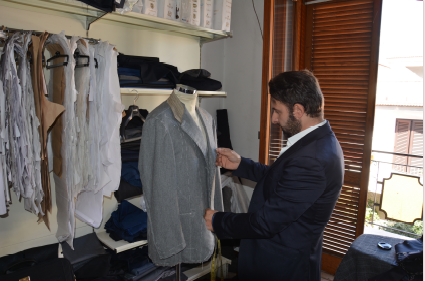
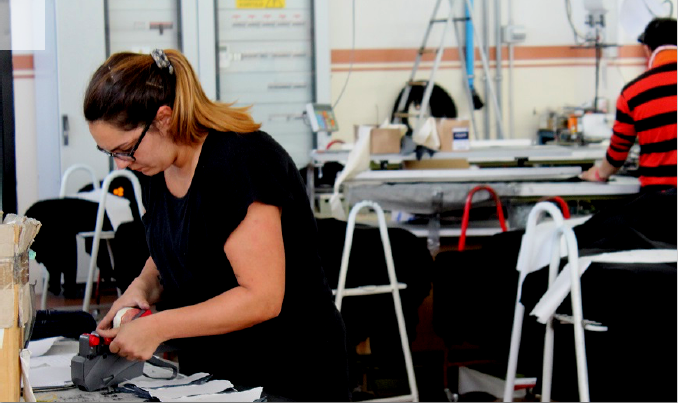
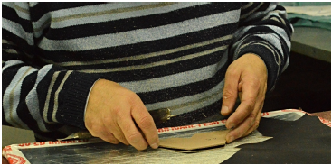

Our Mission

MakersValley connects and enables manufacturers and designers worldwide
anytime, anywhere. MakersValley is an online B2B service platform that
aims to democratize the manufacturing industry by making it more
transparent and accessible.
Our mission is breaking down all the barriers. Connecting local makers with designers
anytime and anywhere in the world. We enable and celebrate greatness and
we promote cross-cultural understanding!
We imagine a world where no matter what race, nationality and
geographical position, every person has the opportunity to connect with
great makers all around the world and expand their possibilities. We imagine
a world where small local Brazilian designers can easily get in touch with a
small Italian Manufacturer or artisan, allowing them to connect and enabling
greatness in one another and their cultural peculiarity. We imagine a world
where doing business between two rural villages in two different countries and continents is possible and easy.
Be Inspired

No sample? No pattern? No problem! MakersValley aims to democratize the manufacturing industry by making it more accessible and transparent. One way we're doing that is by helping designers make their collection even if they don't have the technical know-how to create their own pattern or the time to go and find a sample garment to base their collection on. That’s why we’re launching our Be Inspired catalog, where you can be instantly inspired by hundreds of 100% Made in Italy white label samples, produced by our Italian manufacturers and artisans, customizable by you for your own brand label. Jumpstart your collection with MakersValley today!
Bring To Life

Shouldn't it be easier and less pricey to be able to produce your own Made in Italy clothing line? MakersValley does exactly that! We’re an online business-to-business service platform that aims to democratize the manufacturing industry by making manufacturers accessible to everyone, anytime, anywhere. Thanks BRING TO LIFE service, MakersValley offer to designers and boutiques that have an already made pattern or sew-by-sample the opportunity to be matched with one of our 150+ Italian manufacturers that will produce their design and have assigned a specialized account manager that will support them during the entire manufacturing process.
How It Works

Now that you know about the two services we offer and our mission at MakersValley, you're probably eager to sign up and get started! You can actually sign up today and create a free account on the MakersValley platform. You can click here to sign up. You can start your project for free, then once you have entered all the details, click submit and your account manager will review your project and approve it within 48 hours. Once your project is approved, you'll start getting bids from Italian manufacturers to bring your design to life.